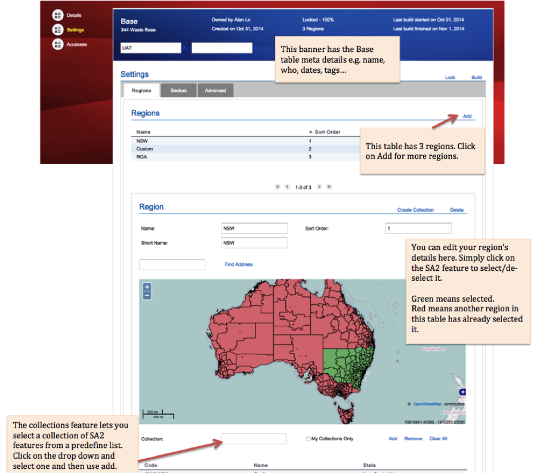

Module 2
Virtual Laboratories and eResearch Tools
Sections of this module:
IntroductionVirtual Laboratories
Alveo Virtual Laboratory
Biodiversity and Climate Change (BCCVL)
Characterisation Virtual Laboratory
Genomics Virtual Laboratory
Endocrine Genomics (endoVL)
Humanities Virtual Laboratory (HuNI)
Industrial Ecology (IELab)
Climate & Weather Science
MARine Virtual Laboratory (MARVL)
Geophysics Virtual Laboratory (VGL)
All-Sky Virtual Observatory
Virtual Hazards, Impact and Risk Laboratory
eResearch Tools
Summary
View all sections on one page (Printer friendly)
Industrial Ecology (IELab)
Target field(s): Industrial ecology (IE), regional economics, transition analysis, MRIO tables, Hybrid LCA data, economic and environmental data.
Website: http://ielab.info
See also: http://nectar.org.au/labs/tracking-the-global-supply-chain/
The Industrial Ecology Virtual Laboratory (IELab) is a cloud-based research platform for enviro-socio-economic modelling. It provides the most comprehensive, environmentally extended input-output model available for use in Australia. It distinguishes geographical and industry detail at high resolution, spans a time period of more than twenty years, and is constantly updated as new data becomes available. Dozens of organisations, researchers and practitioners collaborate in the IELab to build and modify their own customised input-output analytics in fields such as regional and environmental economic modelling, life-cycle assessment, carbon footprinting and environmental impact assessment. The IELab brings together economic, environmental and social data in unprecedented detail and significantly boosts Australia’s ability to make strategic decisions for progress towards sustainability.
The IELab’s direction is co-steered by the Australian Bureau of Statistics, ensuring that IELab outputs conform to national accounting standards, thus instilling credibility and trust. The creation of a Global IELab has started, aimed at adopting the concept at a global level and combining the strengths of some of the existing global multi-region input-output frameworks. The long- term goal of IELab researchers is that the VL concept becomes best-practice and a reference point for undertaking environmental and economic modelling, and that it will make multi-disciplinary research happen by providing one common platform that helps answering questions from different areas.
Intended users
Three groups in particular benefit from IELab infrastructure:
-
The broader academic research community. The IELab is applicable to research in areas such as industrial ecology (IE), regional economics, transition analysis, sustainability and environmental impact assessments as well as participatory modelling.
-
Private sector companies and consultancies specialised in triple-bottom-line and sustainability assessments. Consultants are attracted to the rich ensemble of Hybrid LCA data, the ease of regionalisation of economic and environmental data and the analytical tools provided by IELab.
-
Public sector agencies. The Australian Bureau of Statistics (ABS) has shown a strong interest in the compilation of detailed MRIO tables and environmental satellite accounts by the IELab, since the ABS does not have the resources to produce these itself. Other public sector organisations that might find IELab data and tools useful included e.g. the Productivity Commission, CSIRO, ASIC, Environment Protection Authorities, etc.
Use cases
Despite only having been developed over the last two years, the IElab has already succeeded in bringing together a diverse set of sustainability researchers and practitioners from around Australia, enabling tangible, inter-disciplinary research outputs. These include published triple bottom line assessments of industrial biofuel production [1,2] and large-scale biorefining [3], low-carbon construction materials [4-6] and high-resolution waste modelling [7-9]. The current IELab already provides a much-used basis for data and analysis in industry-relevant, cooperative research, including integrated sustainability assessments and tools for the construction industry* and the water industry**.
* CRC for Low Carbon Living projects RP2002 and RP2007, ARC LP120200306 and ARC DP150100962.
** Project WRRF-14-03 funded by the Water Reuse Research Foundation and the Australian Water Recycling Centre of Excellence, as well as the water-energy-carbon links project ARC LP120200745.

How to get access
There main information and collaboration website for the IELab project is the “IELab Hub” at ielab.info. From there users can access the data and tools of the virtual laboratory through the “IELab Portal” which country-specific, e.g. ielab-aus.info.
Access to the IELab is open to any registered user and free for basic/public data, datafeeds and analytical functionality. Datafeed code is open source (subject to appropriate referencing and citation); optimiser code is compiled and free for research use by registered users. Access to full data, datafeeds and analytical functionality will incur a subscription fee from mid 2016, depending on the type of usage. Users may request paid access to restricted data on a one-off basis. Submission of data to the repository via datafeed is open to all registered users and may lead to the discounting or waiving of subscription fees. The fee structure is gradational, depending on the type of user (distinguishing Expert Researchers, Research Community, Public Sector, Consultants, Distributors and Teachers/Trainers). Fees are discounted or waived for one year if the user contributes well-structured, fully functional datafeeds. Discounted pricing will be available for lower-middle and low-income countries. Essentially, this plan follows standard open-source software revenue models (source code and basic data is free) while at the same time establishing a viable financial model for the long- term future of the project.
References
-
A. Malik, M. Lenzen, A. Geschke, Triple bottom line study of a lignocellulosic biofuel industry. GCB Bioenergy, n/a-n/a (2015).
-
A. Malik, M. Lenzen, P. J. Ralph, B. Tamburic, Hybrid life-cycle assessment of algal biofuel production. Bioresource Technology 184, 436-443 (2015).
-
A. Malik, M. Lenzen, R. N. Ely, E. Dietzenbacher, Simulating the impact of new industries on the economy: The case of biorefining in Australia. Ecol Econ 107, 84- 93 (2014).
-
A. M. Rodríguez-Alloza, A. Malik, M. Lenzen, J. Gallego, Hybrid input-output life cycle assessment of warm mix asphalt mixtures. J Clean Prod.
-
T. Wiedmann, R. Crawford, S. Seo, J. Giesekam, paper presented at the Sustainable Engineering Society (SEng) 2013 Conference, National Convention Centre, Canberra, ACT, 18-20 September 2013 2013.
-
S. H. Teh, T. Wiedmann, J. Schinabeck, H. Rowley, S. Moore, Integrated Carbon Metrics and Assessment for the Built Environment. Procedia CIRP The 22nd CIRP conference on Life Cycle Engineering, 7-8 April 2015 (2015).
-
C. Reynolds, A. Geschke, J. Piantadosi, J. Boland, Estimating industrial solid waste and municipal solid waste data at high resolution using economic accounts: an input–output approach with Australian case study. J Mater Cycles Waste Manag, 1- 10 (2015).
-
C. J. Reynolds, J. Piantadosi, J. Boland, A Waste Supply-Use Analysis of Australian Waste Flows. Journal of Economic Structures 3, (2014).
-
M. Lenzen, C. J. Reynolds, A Supply-Use Approach to Waste Input-Output Analysis. J Ind Ecol 18, 212-226 (2014).

 This work is licensed under a
This work is licensed under a